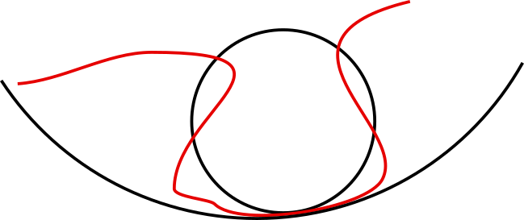

Hints / Solutions to Exercise sheet 5
Last modified: 12:32 AM - 20 October, 2021
PDF versionQuestion 5: Consider a (plane) curve parametrized by a unit speed parametrization \(\gamma : (a, b) \to \mathbf{R}^2\) and a point on that curve \(p = \gamma(t_0)\). We will find a circle which best approximates the curve at \(p\), in the sense defined below. This will give another perspective on curvature. To solve this exercise, you need to be familiar with using derivatives to find out local maxima or minima.
Solution 5:

\(\gamma(t)\) parametrizes the curve in red. Note that in the vicinity of the point of contact, the red curve lies inside the bigger circle but outside the smaller circle. Big circles are those which contain at least some vicinity of the point of contact; small circles are those which exclude at least some vicinity of the point of contact; there is a circle of just the right size that does neither, which we think of as the circle approximating the curve at the point of contact just as the tangent line maybe thought of as the line approximating the curve at the point of contact. This exercise shows that the curvature of this circle is indeed the curvature of the curve at that point.
Part 1. \(\mathbf{N}_s(t)\) is perpendicular to \(\mathbf{T}(t)\) which coincides with the tangent of the circle, so \(\mathbf{N}_s(t)\) is the line containing it is perpendicular to the tangent line of the circle at the same point. Such a line always contains the center of the circle.
Part 2. The center of the circle is a translate of \(p\) in the direction of \(\mathbf{N}_s(t)\) so it is in the same direction as the normal of a circle. The circle’s tangent is perpendicular to the normal, but so is the tangent of the curve and so they coincide.
Part 3. The expression in the norm is measuring the distance of \(\gamma(t)\) from the center of the circle. When it is exactly the radius, it lies on the circle, when it is bigger than the radius, it lies outside the circle.
Part 4. There is some \(\epsilon\) so that for any \(t\in (t_0 - \epsilon, t_0 + \epsilon)\), \(d(t) \geq r^2\). However, at \(d(t_0)=r\) so in this small interval, \(d\) attains its minimum at \(t_0\).
Part 5. Similar to part 4.
Part 6. Although the computations are long, the idea is pretty simple. We use rules such as product rule etc to reduce the derivative of the expression to the derivatives of the individual terms, including \(\mathbf{T}(t)\) and \(\mathbf{N}_s(t)\). We know what the derivatives of \(\mathbf{T}(t)\) and \(\mathbf{N}_s(t)\) are in terms of the basis, \(\{\mathbf{T}(t),\mathbf{N}_s(t)\}\), so we write them in terms of \(\mathbf{T}\) and \(\mathbf{N}_s(t)\), to allow some crucial cancellations.
\[\begin{aligned} (\|\gamma(t) - (p + r \mathbf{N}_s(t))\|^2)' &=& ((\gamma(t) - (p + r \mathbf{N}_s(t))) . (\gamma(t) - (p + r \mathbf{N}_s(t))))'\\ &=& 2(\gamma(t) - (p + r \mathbf{N}_s(t))) . (\gamma(t) - (p + r \mathbf{N}_s(t)))'\\ &=& 2(\gamma(t) - (p + r \mathbf{N}_s(t))) . (\dot{\gamma}(t) - r \dot{\mathbf{N}}_s(t))\\ &=& 2(\gamma(t) - (p + r \mathbf{N}_s(t))) . (\mathbf{T}(t) + r \kappa(t)\mathbf{T}(t))\\ &=& 2(\gamma(t) - (p + r \mathbf{N}_s(t))) . (1 + r \kappa(t))\mathbf{T}(t)\\\end{aligned}\]
At \(t_0\), using \(p = \gamma(t_0)\) (by definition), and that \(\mathbf{T}(t_0)\) and \(\mathbf{N}_s(t_0)\) are orthogonal.
\[\begin{aligned} 2(\gamma(t_0) - (p + r \mathbf{N}_s(t_0))) . (1 + r \kappa(t_0))\mathbf{T}(t) &=& -2r \mathbf{N}_s(t_0)) . (1 + r \kappa(t_0))\mathbf{T}(t_0) \\ &=& -2r (1 + r \kappa(t_0)) \mathbf{N}_s(t_0) . \mathbf{T}(t_0) \\ &=& 0 \\\end{aligned}\]
Part 7. \[\begin{aligned} d''(t) &=& & & (2(\gamma(t) - (p + r \mathbf{N}_s(t))) . (1 + r \kappa(t))\mathbf{T}(t))'\\ &=& & & 2(\gamma(t) - (p + r \mathbf{N}_s(t)))' . (1 + r \kappa(t))\mathbf{T}(t)\\ & & &+& 2(\gamma(t) - (p + r \mathbf{N}_s(t))) . ((1 + r \kappa(t))\mathbf{T}(t))'\\ &=& & & 2(1 - r \kappa(t))\mathbf{T}(t) . (1 + r \kappa(t))\mathbf{T}(t)\\ & & &+& 2(\gamma(t) - (p + r \mathbf{N}_s(t))) . ((1 + r \kappa(t))\mathbf{T}(t))'\\ &=& & & 2(1 - r \kappa(t))\mathbf{T}(t) . (1 + r \kappa(t))\mathbf{T}(t)\\ & & &+& 2(\gamma(t) - (p + r \mathbf{N}_s(t))) . ((1 + r \kappa(t))'\mathbf{T}(t) + (1 + r \kappa(t))\dot{\mathbf{T}}(t))\\ &=& & & 2(1 + r \kappa(t))^2\\ & & &+& 2(\gamma(t) - (p + r \mathbf{N}_s(t))) . (r \kappa'(t)\mathbf{T}(t) + (1 + r \kappa(t))\kappa(t)\mathbf{N}_s(t))\\ &=& & & 2(1 + r \kappa(t))^2\\ & & &+& 2((\gamma(t) - p) - r \mathbf{N}_s(t))) . (r \kappa'(t)\mathbf{T}(t) + (1 + r \kappa(t))\kappa(t)\mathbf{N}_s(t))\\\end{aligned}\]
Now checking at the point, \(t_0\), and using \(p = \gamma(t_0)\) \[\begin{aligned} d''(t_0) &=& & & 2(1 + r \kappa(t_0))^2\\ & & &+& 2((\gamma(t_0) - p) - r \mathbf{N}_s(t_0))) . ( r \kappa'(t_0)\mathbf{T}(t_0) + (1 + r \kappa(t_0))\kappa(t_0)\mathbf{N}_s(t_0))\\ &=& & & 2(1 + r \kappa(t_0))^2\\ & & &+& 2(- r \mathbf{N}_s(t_0))) . ( r \kappa'(t_0)\mathbf{T}(t_0) + (1 + r \kappa(t_0))\kappa(t_0)\mathbf{N}_s(t_0))\\ &=& & & 2(1 + r \kappa(t_0))^2\\ & & &+& 2(- r \mathbf{N}_s(t_0))) . ((1 + r \kappa(t_0))\kappa(t_0)\mathbf{N}_s(t_0))\\ &=& & & 2(1 + r \kappa(t_0))^2 + 2(- r (1 + r \kappa(t_0))\kappa(t_0))\\ &=& & & 2(1 + r \kappa(t_0)(1 + r \kappa(t_0) - r \kappa(t_0)\\ &=& & & 2(1 + r \kappa(t_0))1\end{aligned}\]
So \(d''(t_0) < 0\) whenever \(r < -\frac{1}{\kappa(t_0)}\)
and \(d''(t_0) > 0\) whenever \(r > -\frac{1}{\kappa(t_0)}\)
By the previous parts, the (tangential) circle would be too big or too small unless \(r = -\frac{1}{\kappa(t_0)}\).